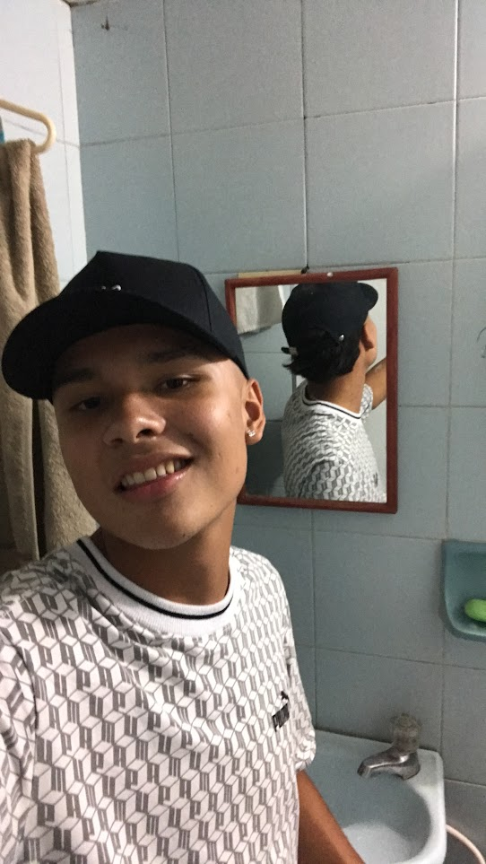

Sobre mi
Mi nombre es Cristian David Diaz Gallego, tengo 18 años, soy de la ciudad de medellin y actualmente soy coder de riwi
Descubre el talento de los coders que hay en Riwi
Mi nombre es Cristian David Diaz Gallego, tengo 18 años, soy de la ciudad de medellin y actualmente soy coder de riwi
Nacido y criado en la ciudad de medellin, el dia 31 de enero del 2007 en el hospital leon 13 de el barrio el poblado.
My madre es nacida el 9 de diciembre del 1968 en el municipio de argelia. Mi padre nacio el 7 de junio del 1967 en el municipio de Bello, ambos se conocieron en la ciudad de medellin y tuvieron 3 hijos.
Actualmente tengo una nueva pasion y es la programacion, en mis tiempos libres suelo estudiar, leer, hacer deporte o pasar el rato con mis amigos.
Soy perseverante ante todas las cosas que me propongo, soy amable, reservado y empatico.